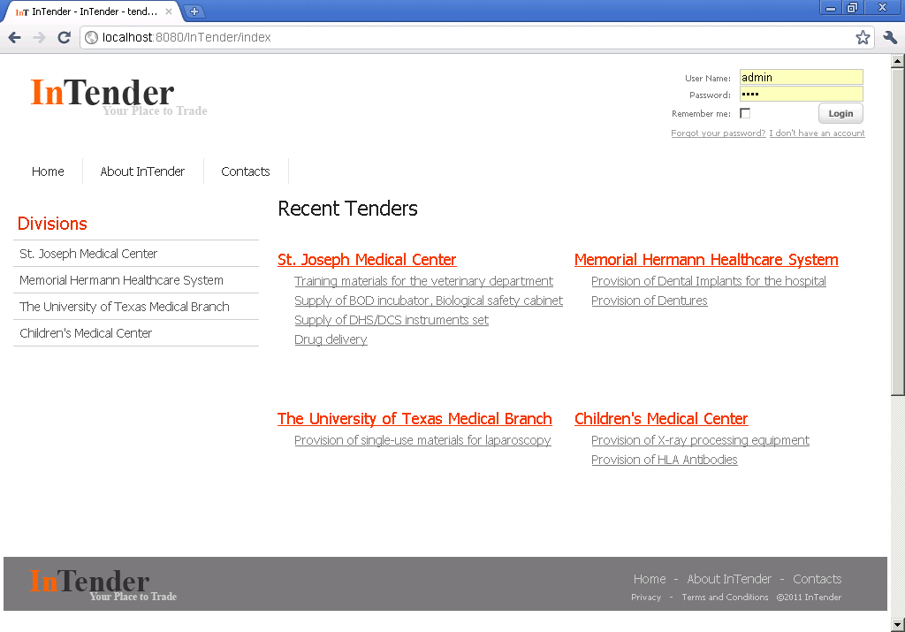
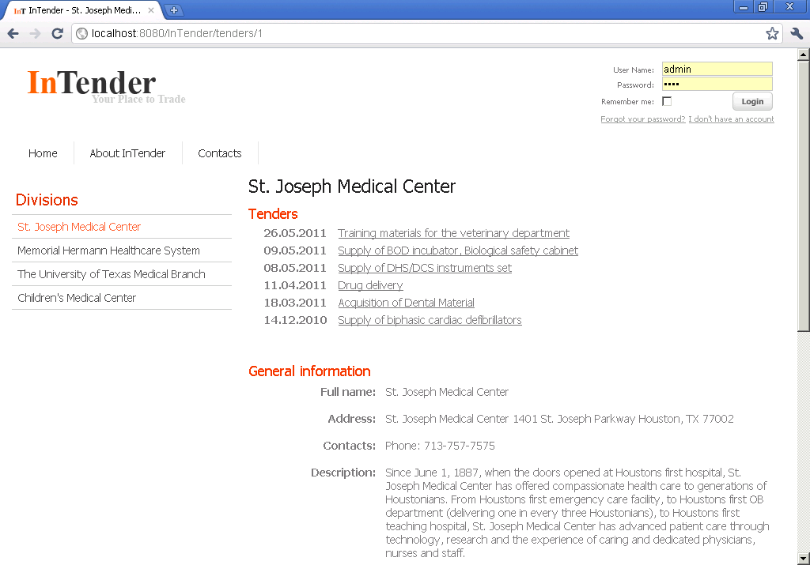
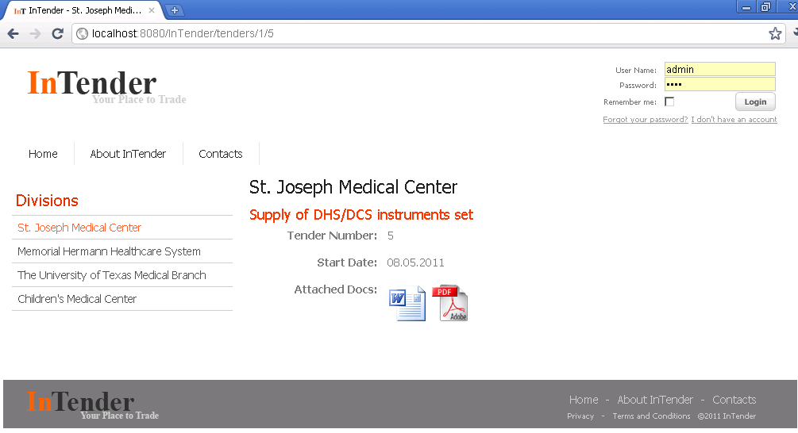
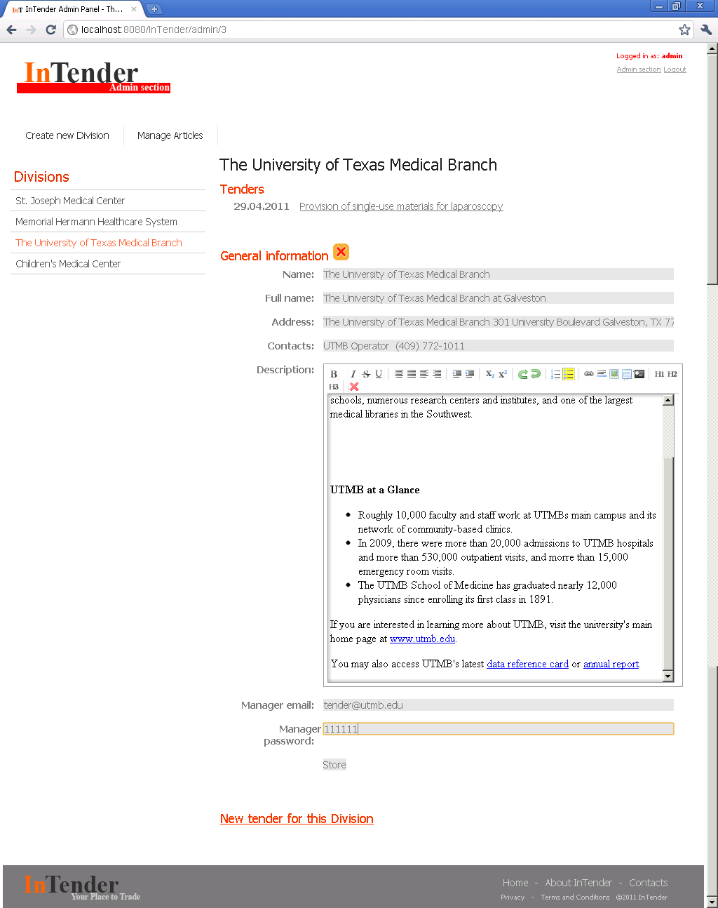
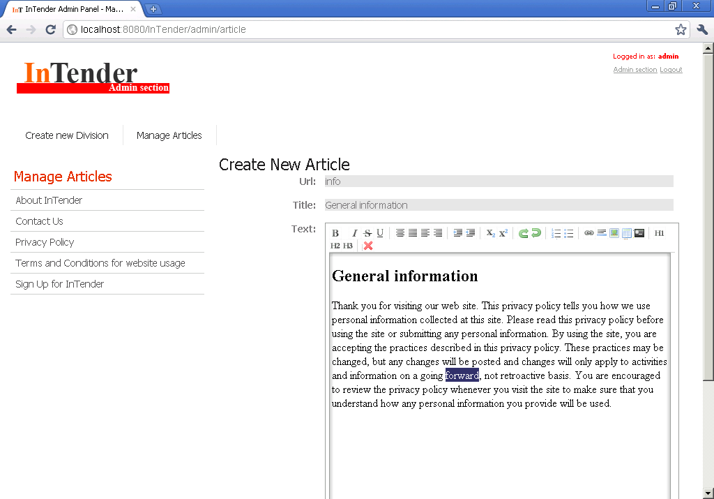
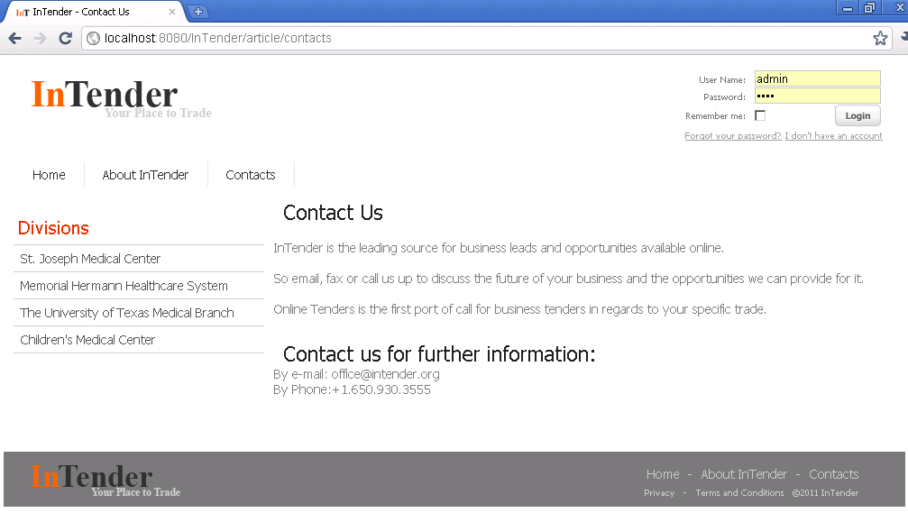
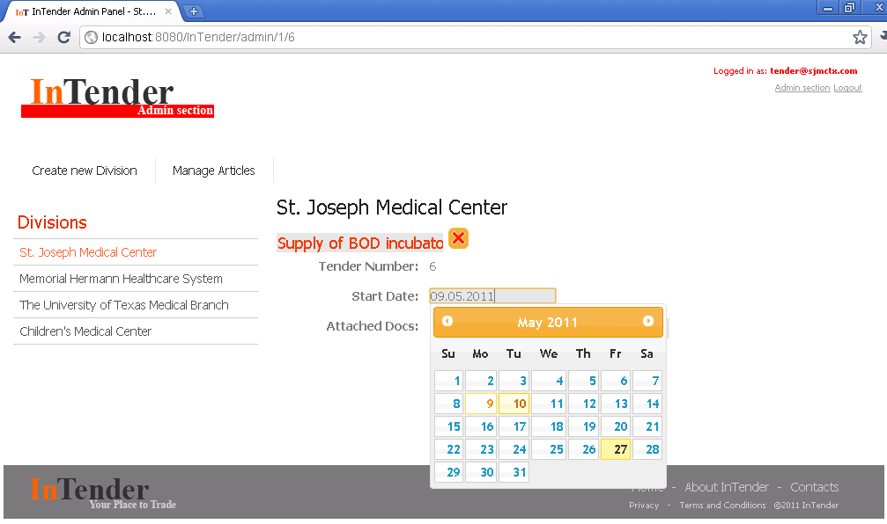

InTender is a web based tool for tenders publishing.
I. Functionality
The system publishes tender documents for the chosen field of business
(for instance, medical industry), categorized by company.



There are three categories of users in the system:
- System Administrator
- Company Manager
- Site User (Anonymous User).
System administrator
System administrator has full access to the portal functionality.
For every company he creates a company profile, which provides information on tenders for this organization.
Administrator also creates a manager profile for every company.

There is also an option to create static pages available on the site with url like: yoursite.com/articles/<pageurl>.


Company manager
Company manager is able to insert/update publications and to modify his company’s profile.
To add a new tender entry manager have to log into the system and specify the name, start date and to attache a document in MS Word 2007 format.
System will automatically convert attached file to pdf format, therefore for every tender system will display details as follows:
- Name of the Tender
- Tender Unique Id
- Start Date
- Attached Docs (both in docx and pdf formats).

Company manager does not have access to any information of other companies in the manager panel.
Site User
Site User is able to look through the tender information throughout the site with the web browser.
II. Technologies and Tools used
Technologies:
- Java 6
- Spring Framework (MVC, Spring Security)
- Localization with Spring framevork
- Hibernate ORM Framework with MySQL database
- FreeMarker templating engine
- jQueryUI library (Datepicker, WYSIWYG-editor)
- JUnit 4
- DocxToPdf Converter (based on docx4j library)
- JSR-303 validation.
Infrastructure tools:
- Maven
- Git versioning system (with the project storage at Github).
III. Installing InTender
- To run InTender application you will need a JVM installed on your machine, a running servlet container, a configured mysql database server.
- Create MySQL user:
CREATE USER intender IDENTIFIED BY '1234';
GRANT USAGE ON *.* TO intender IDENTIFIED BY '1234';
CREATE DATABASE IF NOT EXISTS intender ;
GRANT ALL PRIVILEGES ON intender.* TO intender;
- Please specify jdbc settings in the WEB-INF/jdbc.properties file.
- Copy InTender.war file in the webapps folder and start web server.
- To access site admin panel by defaut please use: admin/pass credentials.
- WARNING: Do not forget to disable <jdbc:initialize-database> tag in production! (WEB-INF\spring\data.xml)
- WARNING: Do not forget to change hibernate.hbm2ddl.auto property in the data.xml.
- INORMATION: Schema and sample data files for database are located in the WEB-INF/classes/sql/ folder.
IV. Other Documentation